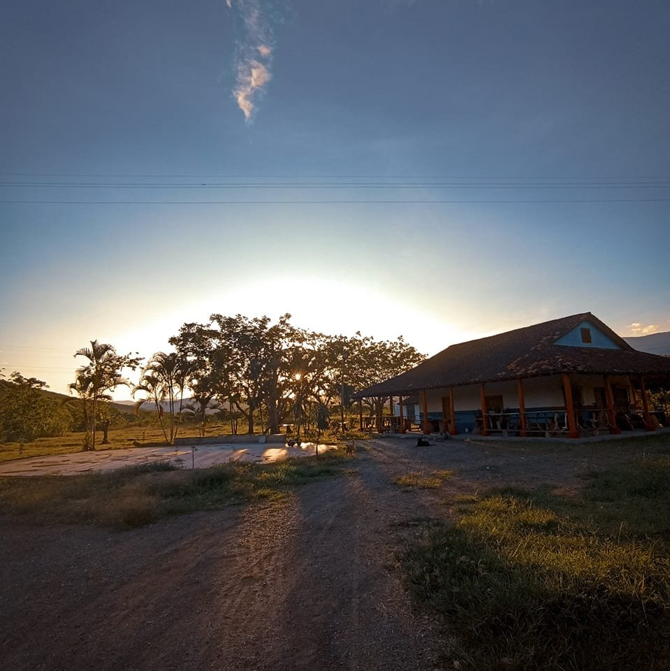
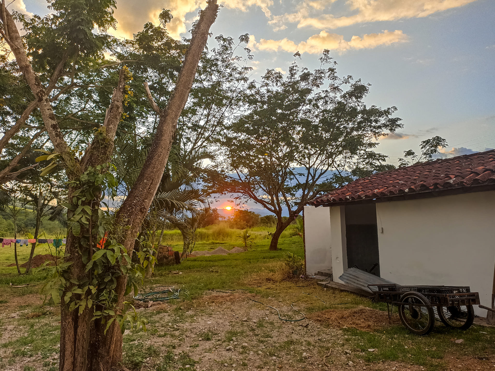
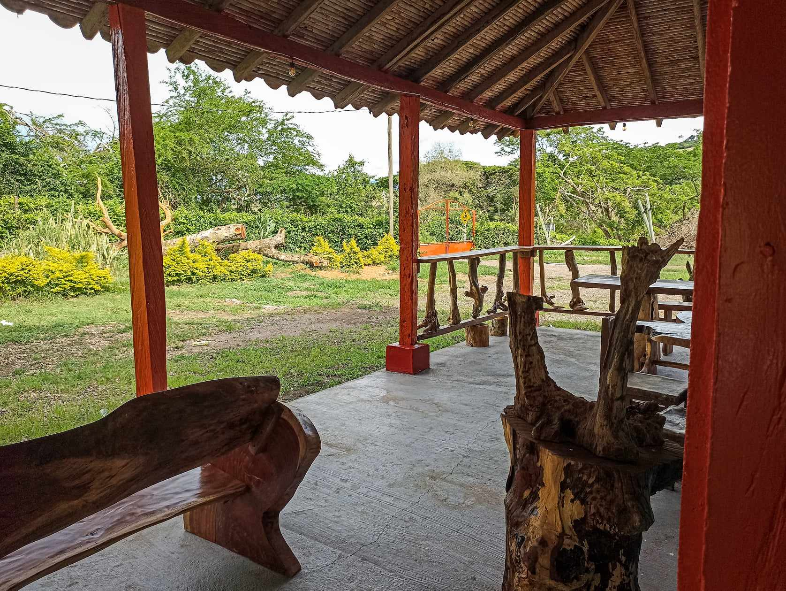
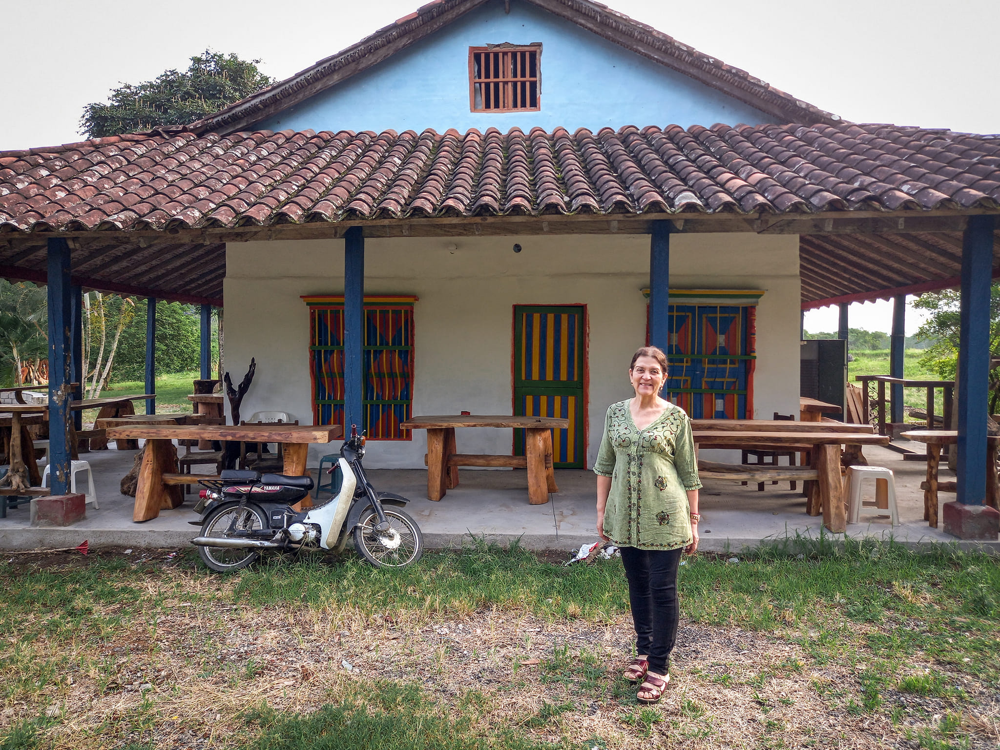
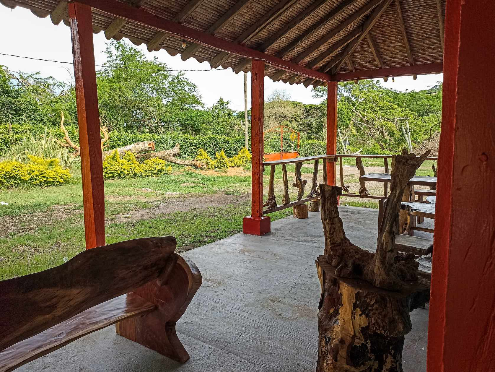
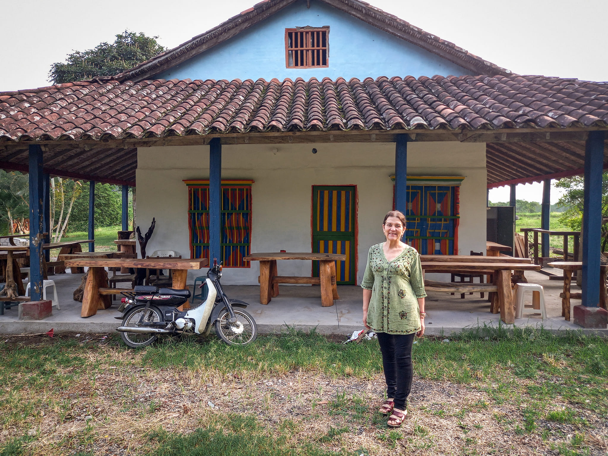
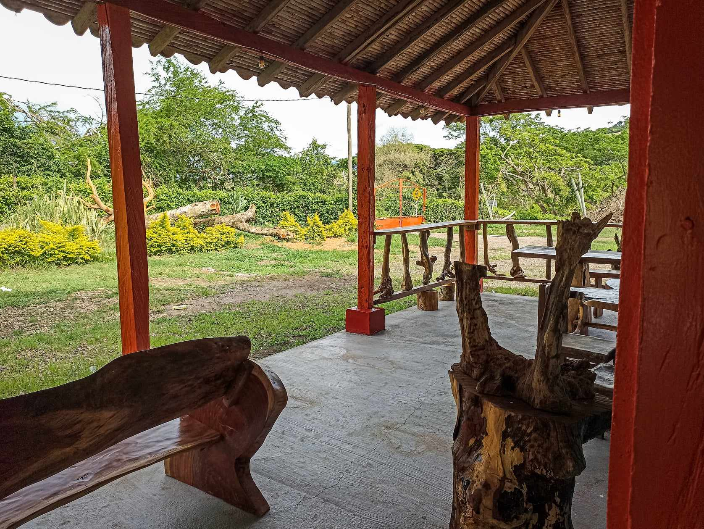
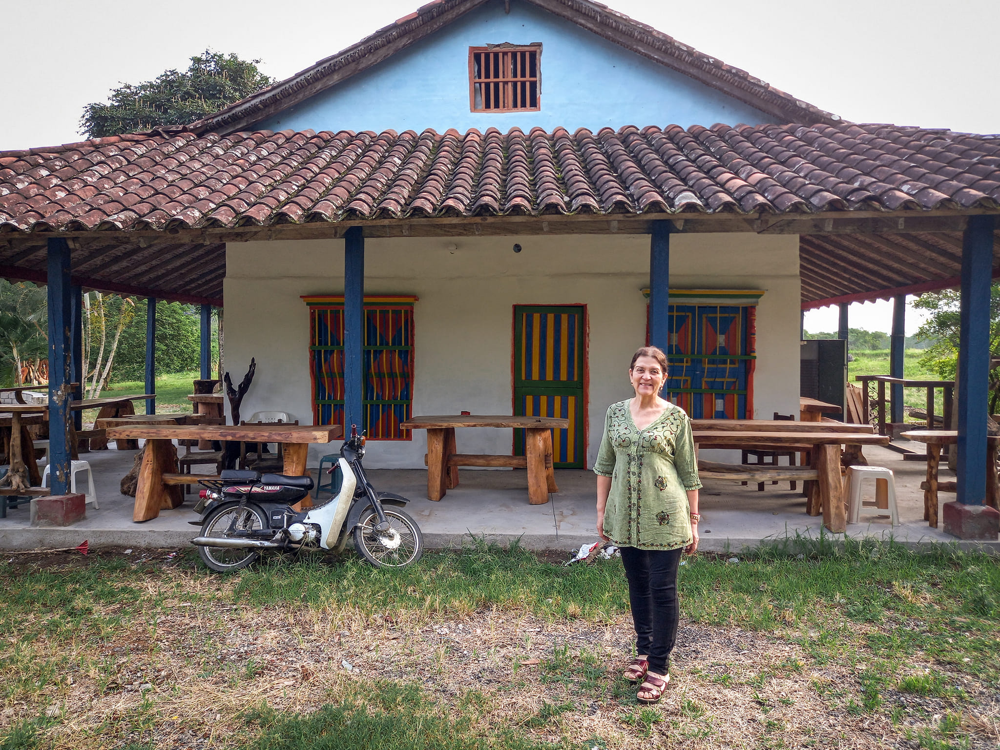
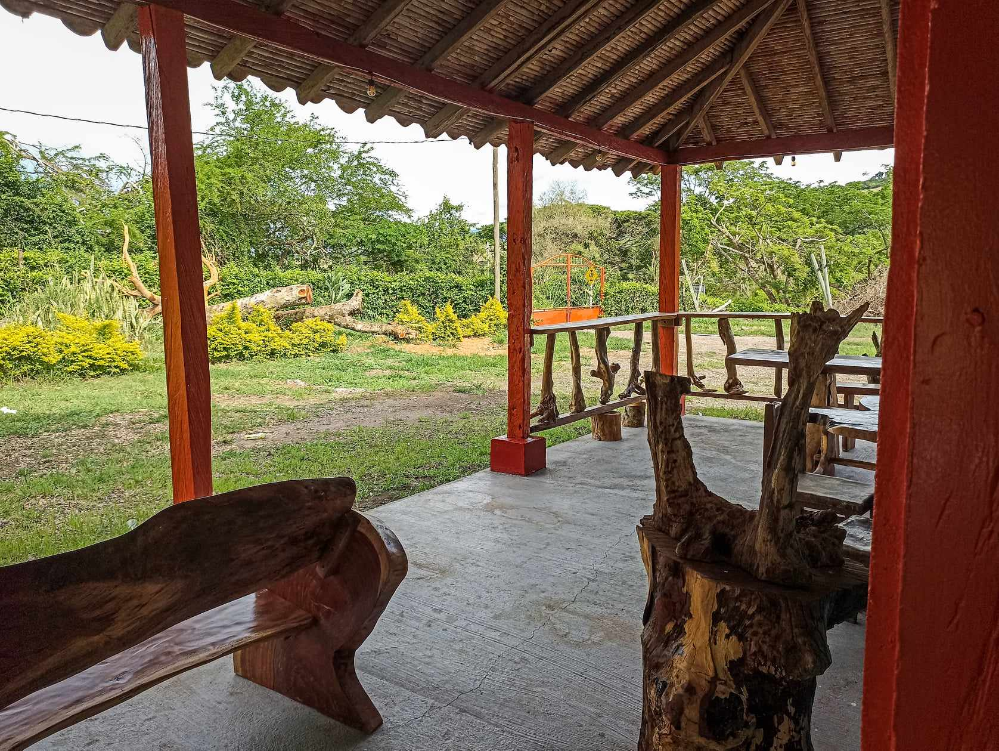
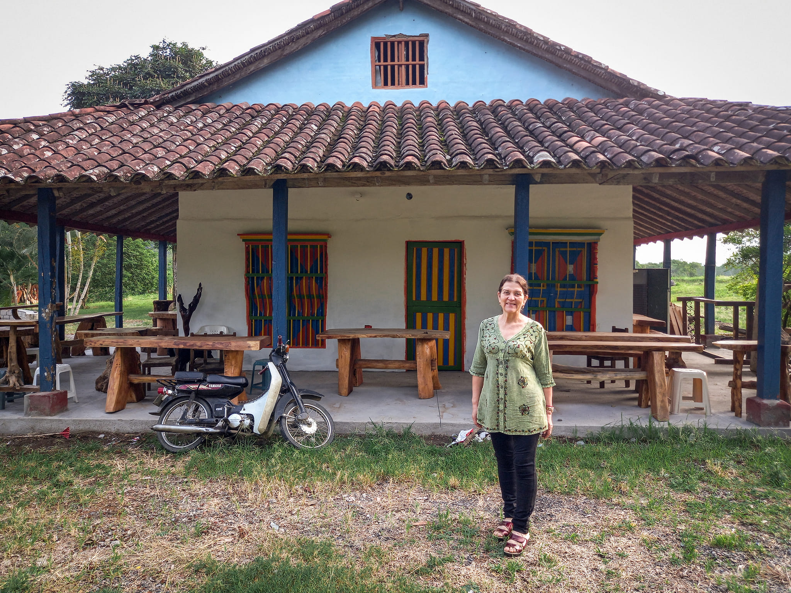

 







YUMA es un vocablo indigena que significa “rio amigo”, era el nombre que los primitivos pobladores de la Región Caribe de Colombia, le daban a la que es la principal arteria fluvial del pais. En 1501 el conquistador Rodrigo de Bastidas lo descubre y bautiza como el Rio Grande de la Magdalena.

Somos los orgullosos propietarios de una hermosa finca ubicada en Tarqui el Ruiseñor del Huila. Nuestra pasión es cultivar y compartir los sabores y experiencias únicas que nuestra tierra tiene para ofrecer.
Cada uno de estos cultivos es cuidadosamente atendido desde la semilla hasta la cosecha, asegurando que cada fruta y vegetal que producimos sea de la más alta calidad.
Además de ser una finca productiva, también ofrecemos una variedad de experiencias turísticas. Los visitantes pueden disfrutar de:
Descubre cómo cultivamos nuestras frutas y vegetales, desde la semilla hasta la cosecha.
Explora el encanto local con nuestras guías turísticas del pueblo
Prueba deliciosas muestras de los productos que elavoramos con nuestros aguacates y uvas.
Disfruta de un recorrido en un carro campero 4x4, admira la vista al río Magdalena desde nuestros miradores, toma fotos con nuestras esculturas, visita nuestro pequeño museo de arte Tarqueño, participa en pesca deportiva en nuestros lagos, y diviértete en nuestra área de juegos para niños.
Esperamos que te unas a nosotros para experimentar todo lo que nuestra finca tiene para ofrecer.